Think aloud: Alright, this is exactly my use case — train on site content, capture leads, one dashboard. 'No credit card required' is a good start. I've got an account here, so let me log in and get my workspace going.
URL/context: https://www.dhroopai.com/
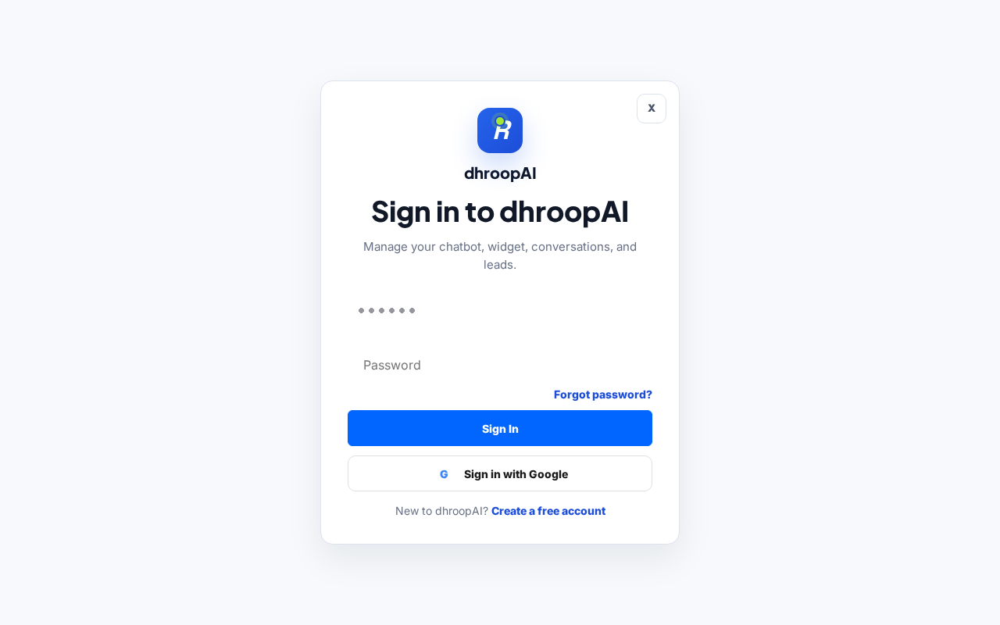
Think aloud: Sign-in page, clean and simple. 'Manage your chatbot, widget, conversations, and leads' — that's exactly my use case. Let me get logged in and see the dashboard.
URL/context: https://www.dhroopai.com/login
Think aloud: I can keep moving through the visible product flow: Enter my password into the password field.
URL/context: https://www.dhroopai.com/login
Think aloud: I can keep moving through the visible product flow: Click Sign In to submit the login form.
URL/context: https://www.dhroopai.com/login
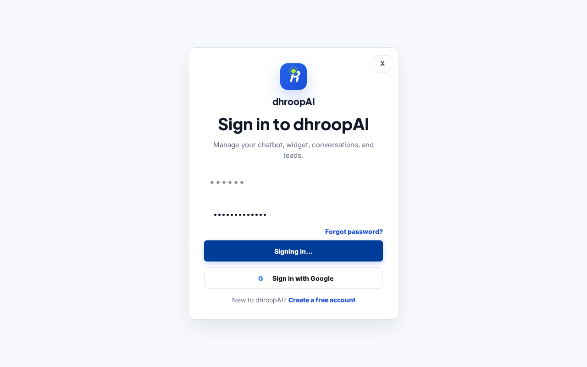
Think aloud: Button says 'Signing in...' and it's disabled, so the login is processing. Just giving it a second to take me to the dashboard.
URL/context: https://www.dhroopai.com/login
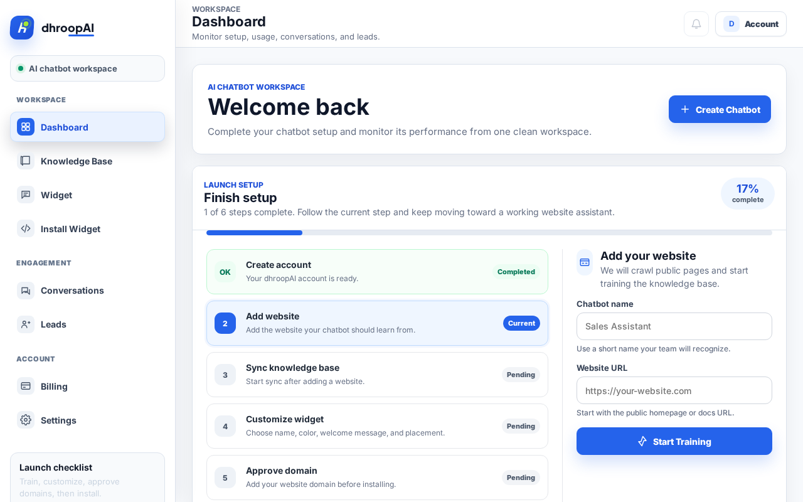
Think aloud: I'm in — clean dashboard, setup checklist at 17%, and it's asking for my website to start training. Chatbot name field and URL field right there. Let's feed it the client site and hit Start Training.
URL/context: https://www.dhroopai.com/dashboard
Think aloud: I can keep moving through the visible product flow: Enter the website URL to train the AI assistant on.
URL/context: https://www.dhroopai.com/dashboard
Think aloud: I can keep moving through the visible product flow: Click Start Training to begin crawling and building the knowledge base.
URL/context: https://www.dhroopai.com/dashboard
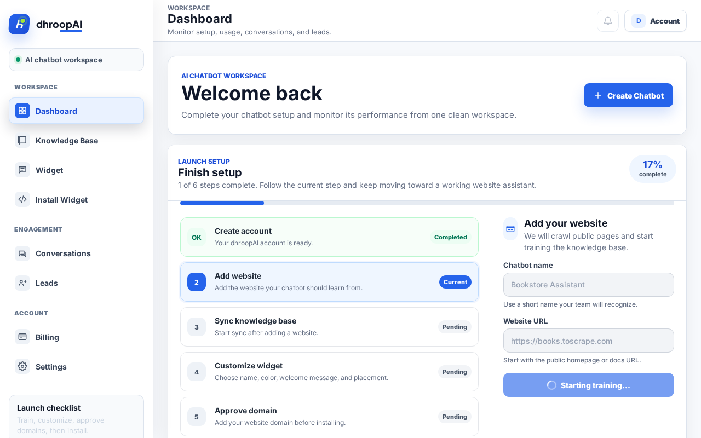
Think aloud: Training's kicked off — button says 'Starting training...' and the form's locked. I'll give it a few seconds to crawl the site before checking the knowledge base status.
URL/context: https://www.dhroopai.com/dashboard
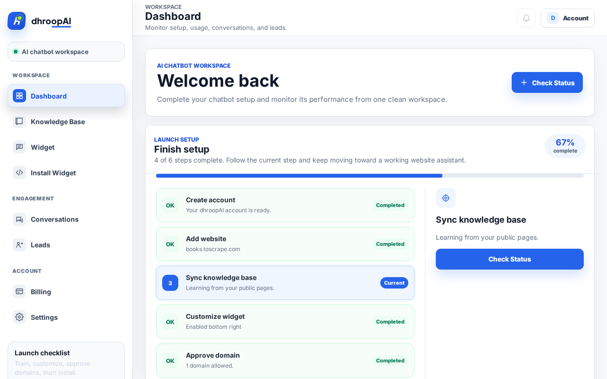
Think aloud: Hmm, mixed signals here — it says 'Syncing' but recent activity says it couldn't access the website. books.toscrape.com is definitely public, so let me hit Check Status and see what's actually going on with the crawl.
URL/context: https://www.dhroopai.com/dashboard

Think aloud: Failed? books.toscrape.com is a totally public demo site — that's on their crawler, not my URL. One Retry Sync before I start seriously doubting this thing.
URL/context: https://www.dhroopai.com/dashboard/bots
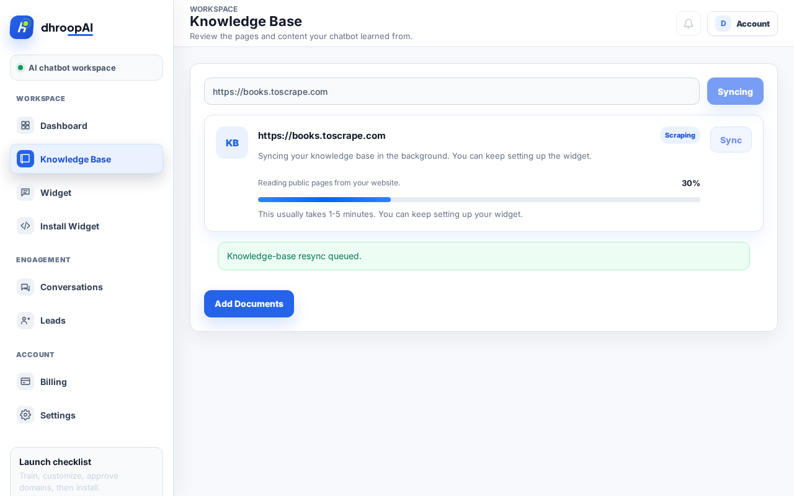
Think aloud: Okay, the retry actually took — it's scraping now, 30% and climbing. While that runs in the background, let me peek at Leads and see if lead capture is actually wired up.
URL/context: https://www.dhroopai.com/dashboard/bots
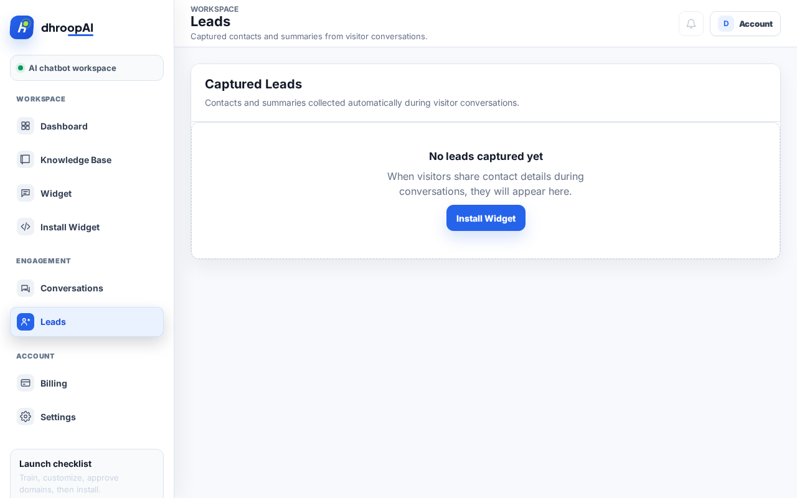
Think aloud: Leads section exists and captures contacts automatically during conversations — good, lead capture is built-in, just empty until the widget's live. Now back to Knowledge Base to see if that retry finished.
URL/context: https://www.dhroopai.com/dashboard/leads
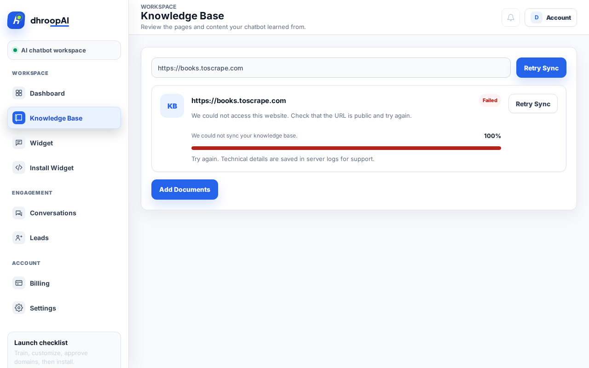
Think aloud: Ugh, it failed AGAIN — 'could not access this website' even though books.toscrape.com is totally public. That's twice now. Crawling's clearly flaky, so I'm switching routes: 'Add Documents' might let me train it without relying on the crawler.
URL/context: https://www.dhroopai.com/dashboard/bots
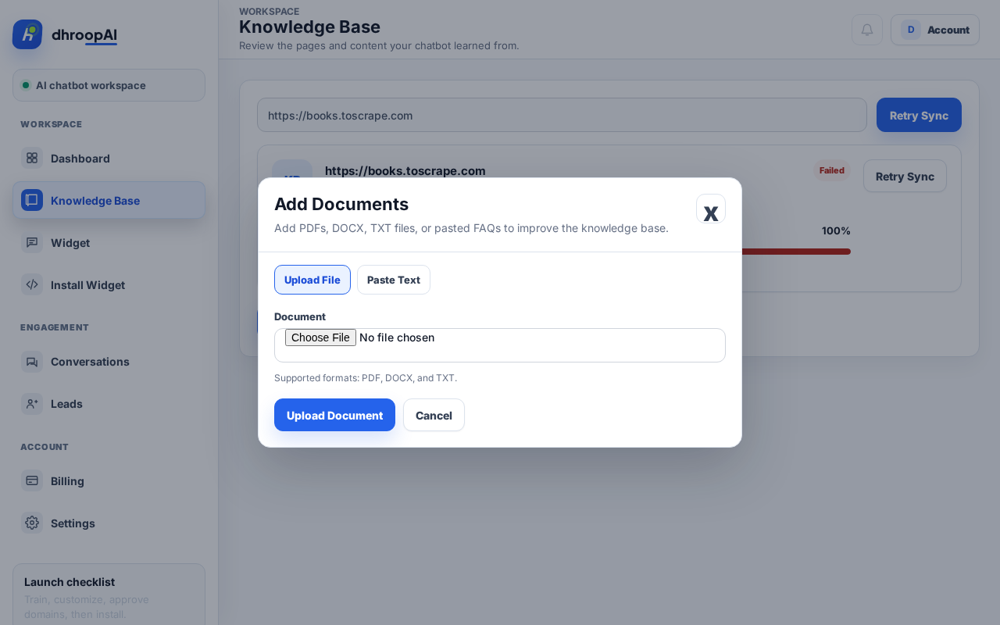
Think aloud: Crawl's dead twice, so fine — Add Documents lets me feed it content directly. It takes PDFs and pasted FAQs, which honestly is how half my client content exists anyway. Let me drop a PDF in and see if that actually works.
URL/context: https://www.dhroopai.com/dashboard/bots
Think aloud: File's in — sample.pdf is sitting in the chooser. Now the real question: does the upload actually process, or does it flake like the crawler did? Hitting Upload Document and watching what the knowledge base says.
URL/context: https://www.dhroopai.com/dashboard/bots
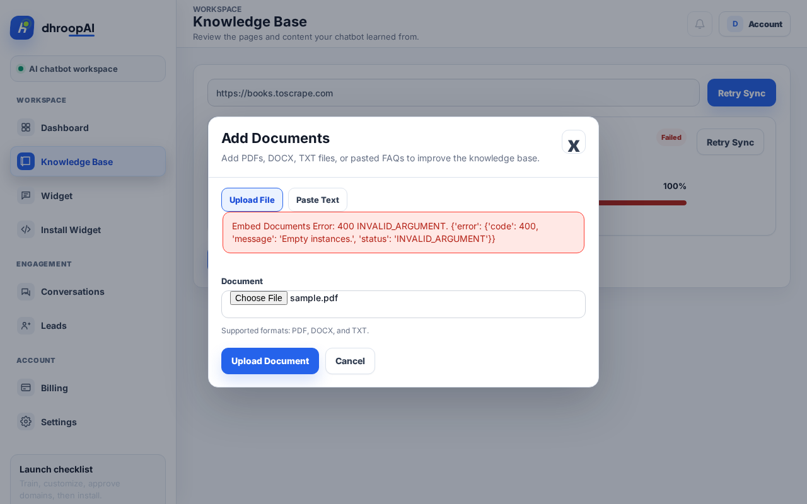
Think aloud: Ugh, a raw 400 'Empty instances' error dumped right in the UI — that's not something I should ever see as a customer. Crawl failed twice, upload failed... last shot: the Paste Text tab, then I'm making my call on this tool.
URL/context: https://www.dhroopai.com/dashboard/bots
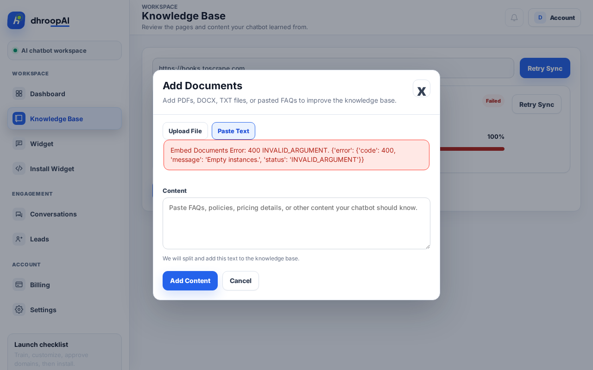
Think aloud: Fine, one last shot — I'll paste in some FAQ text by hand. But let's be real: if the only way to train this thing is copy-pasting content page by page, it doesn't solve my problem at all. I've got a whole site to train, not a sticky note.
URL/context: https://www.dhroopai.com/dashboard/bots